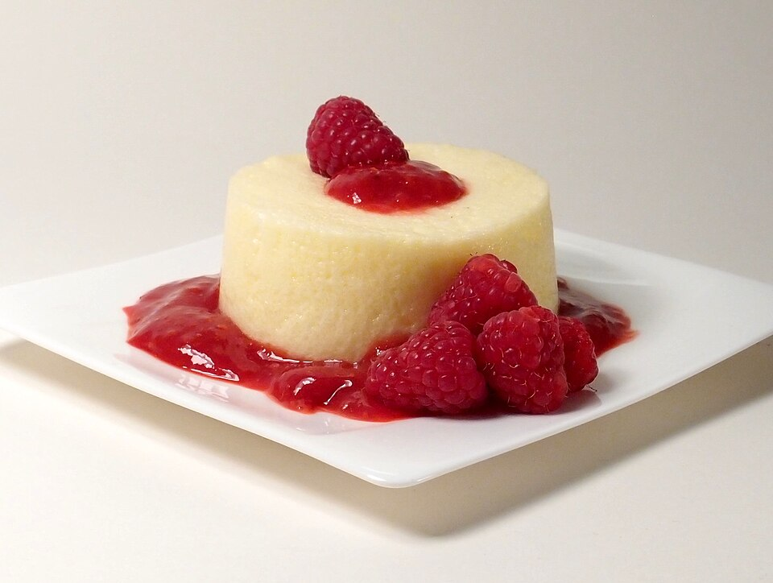

Doces · Musses
Musse torta de limão

Ingredientes
- 3 ovos
- ⅔ xícara (chá) de açúcar
- ⅓ xícara (chá) de suco de limão
- 1 colher (sopa) de maisena
- 2 colheres (sopa) de água
- 1 lata de creme de leite gelado sem soro
- 1 colher (sopa) de manteiga
- 1 pacote de biscoito Maria esfarelado (200 g)
- Raspas de 1 limão
Modo de preparo
- Bata os ovos e o açúcar 10 minutos. Junte o limão e a maisena diluída na água; leve ao fogo baixo até engrossar.
- Retire do fogo, misture o creme de leite e a manteiga.
- Forre as taças com metade dos biscoitos, despeje o creme, gele 4 horas e finalize com o restante dos biscoitos e as raspas.